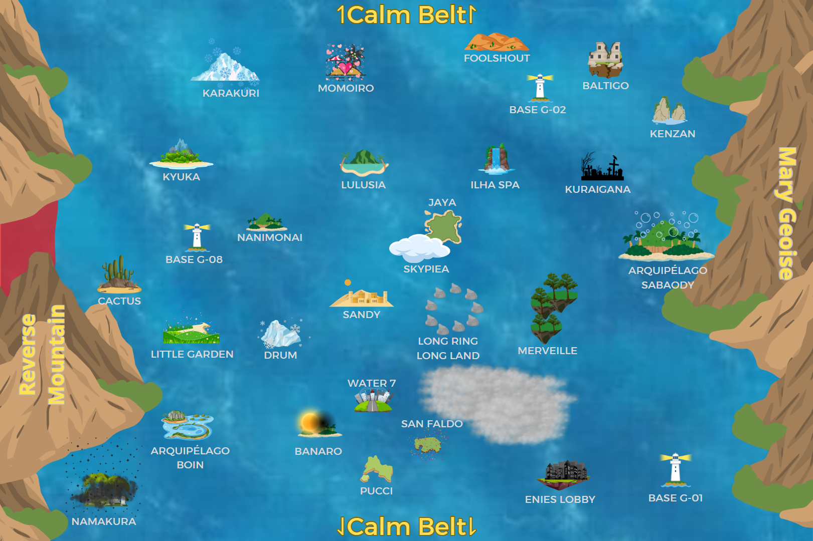

GEOGRAFIA E NAVEGAÇÃO
O sistema de navegação do nosso RPG é bem simples. Abaixo estarão as informações sobre quais navios, quantos caracteres e qual Log Pose vocês irão precisar para navegar pelos mares. Aproveite!
SISTEMA DE LOCOMOÇÃO


.png)
.png)


.png)
.png)


O mapa do mundo de One Piece é dividido em mares, que são: Blues, Grand Line, Novo Mundo e Calm Belt. Para se locomover nesse mapa, você pode escolher entre diferentes navios para executar a travessia entre os mares.
Para viajar, basta informar sua localização atual e o destino desejado usando as coordenadas do mapa (clicando em Copiar Mapa e enviando no Deғιɴιçα̃o de Roтαѕ ⋮⋮ Oɴe pιece; além disso, antes de enviar isso lá, precisa mandar a cena de navegação no Neɯ Seαs O.P (Ꮻɴ)). Por exemplo, se você está em Toroa no mar West Blue e quer ir para Ohara, também no West Blue, pode escolher o meio de transporte e calcular o tempo de deslocamento de acordo. O sistema funciona com o método de plano quadriculado. Cada quadradinho representará um tempo necessário para ser percorrido, podendo ser aéreo ou marítimo.
O modo de navegação aérea (no caso de Frutas) dependerá da velocidade de deslocamento ou do tipo de Fruta. Peça a um ADM que calcule o tempo necessário para percorrer cada quadradinho com o sistema de viagem de sua Fruta.
Rolagem de Dados
Quando mandar o cálculo de tempo no Deғιɴιçα̃o de Roтαѕ ⋮⋮ Oɴe pιece, entre nesse link e preencha o nome de seu personagem lá, e então clique para girar 1d100, tire print do resultado e mande no grupo.
BLUES
Os Blues são os mares mais calmos e suaves que existem no mundo, sendo divididos em quatro partes: North Blue, East Blue, South Blue e West Blue.
Barreira de Pontos
- Naturalmente (Treinos): Chega até 15.000 pontos.
- Em Eventos/Narrações: Chega até 20.000 pontos.
- Chegando em 20.000 pontos, o personagem não ganha mais pontos nem em narrações enquanto estiver nestes Mares.
Requisitos de Navegação
- Se não é Navegador: Escrever 1.200 caracteres. Se não tiver um NPC Especial Navegador, tem uma chance de 50% de acabar indo pra ilha errada.
- Se é Navegador: Se você for um jogador Navegador, poderá navegar com apenas 720 caracteres e não precisa de um NPC Especial.
| Resultado (d100) | Efeito |
|---|---|
| 01–05 | O navio é atacado por um Rei do Mar. |
| 06–25 | Tempestade súbita: Navio perde 3 vidas ao invés de 1. |
| 26–45 | Bateu numa pedra: Navio perde 2 vidas ao invés de 1. |
| 46–50 | A viagem segue normalmente. |
| 51–75 | Boas correntes: menos 1 hora de viagem. |
| 76–95 | Ótima navegação: menos 2 horas de viagem. |
| 96–100 | Navegação perfeita: menos 3 horas de viagem e o navio não perde vidas. |
PARAÍSO
A Grand Line é uma corrente oceânica cercada pelos Calm Belt, que se estende ao longo de uma linha imaginária do noroeste ao sudeste pelo meio do mundo e é perpendicular à Red Line. A Red Line é um vasto continente que circunda o globo de nordeste a sudoeste. Essas duas linhas dividem o resto do mar em North Blue, East Blue, West Blue e South Blue.
Barreira de Pontos
- Naturalmente (Treinos): Chega até 40.000 pontos.
- Em Eventos/Narrações: Chega até 50.000 pontos.
- Chegando em 50.000 pontos, o personagem não ganha mais pontos nem em narrações enquanto estiver neste Mar.
Travessia e Navegação
Para atravessar a Red Line, é necessário ser um Navegador (ou ter um NPC Especial Navegador) com um Log Pose. Ao chegarem na Grand Line, os mesmos requisitos são exigidos, mas:
Ilhas Iniciais
Ao entrar no Paraíso cruzando a Red Line com um Log Pose, a primeira ilha de destino não pode ser escolhida livremente. As rotas magnéticas iniciais apontam para quatro ilhas específicas. O jogador deverá girar um d4 (dado de 4 faces) para definir onde sua jornada na Grand Line começará:
- 1: Cactus
- 2: Kyuka
- 3: Namakura
- 4: Nanimonai
- Se não é Navegador: Escrever 2.400 caracteres e ter um NPC Especial que é Navegador. Sem Navegador é impossível velejar por lá.
- Se é Navegador: Se você for um jogador Navegador, poderá navegar com apenas 1.440 caracteres e não precisa de um NPC Especial.
| Resultado (d100) | Efeito |
|---|---|
| 01–25 | Rei do Mar aparece. |
| 26–45 | Clima caótico: Perde 4 vidas. |
| 46–65 | Corrente traiçoeira: Perde 2 vidas. |
| 66–70 | Desvio leve de rota: Sem perdas, mas viagem atrasa 1 hora. |
| 71–85 | Corrente instável controlada: Sem perdas, sem bônus de tempo. |
| 86–95 | Atalho acidental eficiente: Menos 1 hora de viagem. |
| 96–100 | Caminho limpo e estável: Menos 2 horas e sem perda de vidas. |
NOVO MUNDO
A segunda metade da Grand Line, o mar mais forte e impiedoso que existe. Aqui, o clima é um caos constante, o magnetismo desafia a lógica e as feras marinhas são o menor dos seus problemas. Apenas as tripulações mais preparadas conseguem sobreviver à travessia e às regras implacáveis deste oceano.
Travessia para o Novo Mundo
Existem três formas de adentrar o Novo Mundo:
- A primeira é por cima, cruzando a Red Line a partir do Paraíso (restrita à Marinha e ao Governo, sendo necessário possuir NO MÍNIMO 45.000 pontos base para se qualificar a usar esta tecnologia);
- A segunda é atravessar o temido Calm Belt navegando diretamente a partir do North Blue ou do West Blue (submetendo-se a todas as penalidades e exigências desse Mar). Importante: Quem utilizar essa rota chegará obrigatoriamente em Punk Hazard (se vier do North Calm Belt) ou Raijin (se vier do West Calm Belt). Toda a viagem deve ser feita inteiramente pelo Calm Belt, e o jogador só pode adentrar os domínios do Novo Mundo no final do trajeto, quando faltarem no máximo 5 quadrados de navegação para alcançar a ilha de destino;
- A terceira, tradicionalmente usada pelos piratas vindos do Paraíso, é cruzar por baixo, passando pela Ilha dos Homens-Peixe.
Para essa travessia subaquática, é obrigatório revestir o navio no Arquipélago Sabaody (através de um NPC Carpinteiro ou de um jogador da classe Carpinteiro de Nível 4+ que tenha aprendido esse método de revestimento em ON; Ferreiros e Inventores também podem aprender esse método, mas precisam estar no Nível 5). Tipos de resina disponíveis para a descida:
- Bolha Fraca (฿1.500.000.000): 1 vida. Rolagens abaixo de 10 a fazem estourar.
- Bolha Mediana (฿2.000.000.000): 3 vidas. Rolagens abaixo de 10 tiram 1 vida da bolha. Utilizada somente para passagem.
- Bolha Forte (฿2.500.000.000): 7 vidas. Rolagens abaixo de 10 não a danificam.
Ilhas Iniciais
Ao entrar no Novo Mundo, a primeira ilha de destino não pode ser escolhida livremente. As rotas magnéticas iniciais apontam para quatro ilhas específicas. O jogador deverá girar um d4 (dado de 4 faces) para definir onde sua jornada na segunda metade da Grand Line começará:
- 1: Mystoria
- 2: Punk Hazard
- 3: Raijin
- 4: Risky Red
Navegação e Log Pose
- Alcance Máximo: Você só pode velejar para ilhas que estejam a até 3 quadrados de distância (contando com o quadrado inicial). Saltos diretos maiores que isso são quase impossíveis na geografia caótica desse Mar; se quiser pode velejar 4 quadrados, mas girando 2d100 ao invés de 1d100 e pegando o pior resultado; se quiser forçar ainda mais, pode velejar 5 quadrados, mas girando 3d100 e pegando o pior resultado.
- Adaptação Magnética: O Log Pose precisa de tempo para calibrar a energia magnética da próxima ilha. A cada ilha visitada, é obrigatório um tempo de espera de 72 horas na vida real antes de poder navegar adiante.
- Eternal Pose Restrito: No Novo Mundo, você só pode comprar um Eternal Pose para uma ilha específica se estiver nela no momento da compra.
Barreira de Pontos
O teto máximo de pontos de atributos do seu personagem será aumentado de acordo com as ilhas que conseguir visitar:
Mystoria, Punk Hazard, Raijin e Risky Red.
Applenine, Dressrosa, Green Bit, Whole Cake e Yukiryu.
Foodvalten e Wano.
Egghead, Elbaf, Hachinosu e Prodence.
Lodestar e Laugh Tale.
Como explicado na página Atributos, personagens com 40.000 pontos ou mais não podem ganhar pontos com cenas no ON, pois a partir desse teto, os pontos adicionais só são conquistados via Eventos, Caçadas ou Dominações. Isso não muda ao chegar ao Novo Mundo: mesmo com o limite de pontos aumentado, ainda é necessário que os pontos sejam ganhos via Eventos, Caçadas ou Dominações.
Requisitos de Navegação
- Se não é Navegador: Escrever 3.600 caracteres e ter um NPC Especial que é Navegador. Sem Navegador é impossível velejar por lá.
- Se é Navegador: Se você for um jogador Navegador, poderá navegar com apenas 2.400 caracteres e não precisa de um NPC Especial.
| Resultado (d100) | Efeito |
|---|---|
| 01–50 | Reis do Mar aparecem. |
| 51–65 | Mar revolto e ataque inesperado: Perde 4 vidas. |
| 66–70 | Clima ameaçador: Sem perdas, mas atraso de 2 horas. |
| 71–85 | Condições severas, mas controladas: Sem perdas, mas atraso de 1 hora. |
| 86–95 | Comando de elite: Menos 1 hora de viagem. |
| 96–100 | Sorte rara: Menos 2 horas de viagem e nenhuma perda de vida. |
CALM BELT
O Calm Belt é uma região situada ao norte e ao sul do Paraíso e do Novo Mundo. Devido à ausência quase total de correntes oceânicas e ventos, e à presença de muitos Reis do Mar, estas áreas são barreiras muito eficazes para aqueles que tentam entrar na Grand Line.
Barreira de Pontos
- Naturalmente (Treinos): Chega até 40.000 pontos.
- Em Eventos/Narrações: Chega até 70.000 pontos.
- Chegando em 70.000 pontos, o personagem não ganha mais pontos nem em narrações enquanto estiver nestes Mares.
- Atenção: Para ultrapassar a barreira de 50.000 pontos mesmo estando no Calm Belt, é obrigatório cumprir os requisitos do Novo Mundo (ou seja, você precisa chegar nas ilhas específicas do Novo Mundo que liberam essas pontuações altas para validar o avanço).
Requisitos e Dificuldades
Cientistas da Marinha descobriram uma forma de atravessar essas áreas revestindo os cascos dos navios com kairoseki. Esse minério possui propriedades semelhantes às do mar, o que dificulta a percepção das criaturas marinhas em relação ao navio. Contra-Almirantes da Marinha e patentes acima possuem acesso a essa tecnologia, assim como os CP-6 do Governo Mundial em diante e os Pilares da Vanguarda Popular Revolucionária em diante.
Devido à falta de correntes marítimas, navios sem propulsores ou remos não conseguem navegar nessas águas.
- Devido ao perigo constante e imprevisível, o jogador deve obrigatoriamente girar 1d100 no momento em que inicia a navegação, e mais 1d100 adicional a cada 3 quadrados avançados no mapa.
- Não existem atalhos ou ventos favoráveis no Calm Belt. É impossível acelerar a viagem, mesmo com habilidades de classe. O foco da navegação aqui é inteiramente sobreviver à calmaria mortal e aos Reis do Mar.
- Se não é Navegador: Escrever 4.500 caracteres e ter um NPC Especial que é Navegador. Sem Navegador é impossível velejar por lá.
- Se é Navegador: Se você for um jogador Navegador, poderá navegar com apenas 3.000 caracteres e não precisa de um NPC Especial.
| Resultado (d100) | Efeito |
|---|---|
| 01–45 | Ninho de Reis do Mar: O navio invade o território de um bando de Reis do Mar. A tripulação precisará entrar em combate real contra 4 feras colossais (narrado por um ADM). A viagem sofre um atraso de 4 horas e os danos ao navio dependerão do desfecho da batalha. |
| 46–90 | Ataque Surpresa: Uma fera gigantesca emerge das profundezas do oceano para devorar a embarcação. O jogador deve lutar contra o Rei do Mar em um combate mortal. A viagem atrasa em 2 horas e os danos na estrutura serão decididos durante a luta. |
| 91–94 | Águas Mortas: A ausência brutal de correntes e ventos aprisiona o navio temporariamente num silêncio enlouquecedor. Atraso de 4 horas na viagem, mas sem encontros indesejados. |
| 95–98 | Tensão Psicológica: A calmaria constante e as sombras enormes passando muito abaixo do barco afetam a precisão e o ritmo da navegação. Atraso de 2 horas na viagem, sem combates. |
| 99–100 | Travessia Silenciosa: Um milagre de calmaria. O navio passa completamente despercebido pelos monstros e navega suavemente. A viagem prossegue de forma perfeita, sem combates ou atrasos de tempo. |
NAVEGAÇÃO INDIVIDUAL
Para cruzar os mares sem o auxílio de uma embarcação, o personagem enfrentará um teste extremo de resistência onde precisará gastar 2.000 pontos de Estamina para cada quadrado avançado no mapa. Como a vastidão e as correntes marítimas são implacáveis, o tempo exigido para essa travessia individual varia estritamente de acordo com o método de locomoção utilizado.
- Nado Comum: 18 horas por quadrado;
- Nado de Tritões e Sereianos: 11 horas por quadrado;
- Voo: 5 horas por quadrado.
ATENÇÃO
Não há limite ou requisito mínimo de pontos para atravessar os mares, tampouco necessidade de um barco; basta confiar na sua sorte. Se desejar tentar qualquer tipo de navegação, avise um ADM e ele irá narrar caso surjam adversidades durante a jornada marítima.
Knock Up Stream é a rampa de acesso para Skypiea, que abre todas as segundas e sextas-feiras às 8:00 e encerra às 18:00. Essa é a única forma de chegar em Skypiea, a menos que você tenha um meio alternativo para voar.